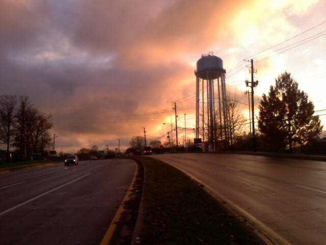
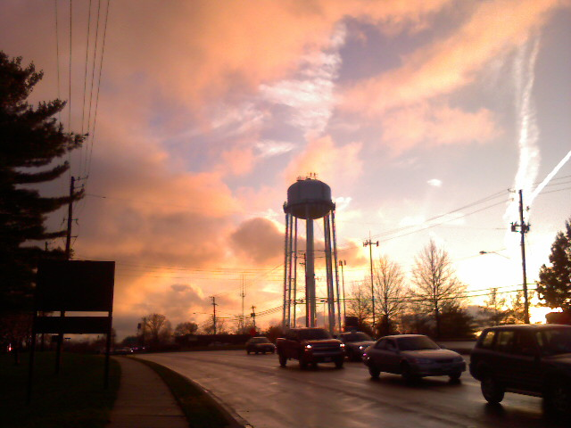
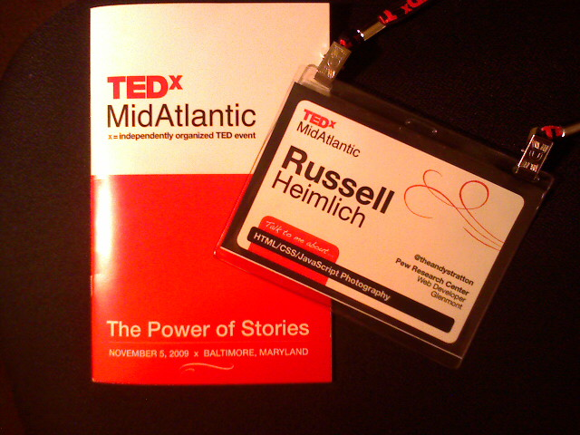

Water Tower At Sunset


After days of clouds, drizzle, and mist, the sky finally opens up and sunshine reappears. Just in time for the long Thanksgiving weekend.

After days of clouds, drizzle, and mist, the sky finally opens up and sunshine reappears. Just in time for the long Thanksgiving weekend.

AOL offered a glimpse into their re-branding today and most of the web was left dazed and confused (55% of the respondents to a RedWriteWeb poll hated it). AOL simply decapitalized the “O” and the “L” and added a dot at the end. While the logo itself will stay the same, the background will change continuously foregoing a traditional mark.
It’s certainly an off-kilter strategy but a good fit for a company trying to reinvent itself. I’m a fan of the new look.
The dot part wasn’t really explained well in the media coverage. Aol. plans to brand their various properties like Aol.Shopping and Aol.Mapquest. It’s meant to tie all of Aol.’s vast content together.
As for the random background images, I think it is fun and keeps things interesting. Bing is doing the same thing with their background images on the main search page and Google’s doodle logos are in a similiar vein. MTV, a company outside of the Internet space, is famous for the many variations of it’s logo. Aol.’s re-branding strategy certainly isn’t anything new and in fact feels more like the front end of a trend.

While Aol.’s re-branding efforts are modern and edgy now, I doubt it will have the lasting power of their previous branding. It’s not perfect but it’s just what the company needs as it prepares to go alone as it spins off from Time Warner. Besides, look how many people are talking about the company after so many years of media obscurity.
This past Saturday, November 14th, a hundred DC tech enthusiasts gathered at the Martin Luther King Library to create their own conference. Topics were suggested by participants and the group at large determined the schedule. It was a BarCamp at it’s best!


This year’s BarCamp had a few twists. The word ‘Twitter’ was banned and anyone violating that rule had to pay a dollar to the Twitter swear jar which was donated to charity. The other rule was no PowerPoint slides which was an effort to promote group discussions and participation over lectures.
I got to catch up with former co-workers from USNews as well as other DC tech-heads I met at other local events. The entire event including lunch was free of charge thanks to the generous sponsors who helped make BarCampDC possible. The pizza was quite good.

Some of the talks I went to included:

How To Play Tetris led by John Chen. John didn’t actually think anyone was interested in his talk but we had a good-size group talking about video game politics, strategies for Tetris, and the fact that there are Tetris pros making US$100k per year in Korea. The key takeaway was being good at Tetris takes practice, practice, and more practice. And after you’ve practiced some more, you wake up one day and realize you’re good at Tetris.
An Introduction to the Android Platform Gyuri Grell and Zvi Band led an introduction to the Android mobile OS platform. The talk was a little over my head as it was mostly about Java, which I know nothing about. The source code for Meetro DC, the DC Metro app demoed, can be found on GitHub for anyone to poke around and play with. I did enjoy seeing from a high level how Android apps work and shedding some light on the magic running behind the scenes. I’m really excited to see where Android goes in the future.
The most thought-provoking talk I sat in was Generalist vs. Specialist led by Kelly Gifford. It was such an open-ended topic that spurred a healthy debate. From my point of view you are both a generalist and specialist depending on what level you are comparing to. For example, in your company you might be the only “web person”, making you a specialist but with so many different hats to wear in a sole-developer position, you have to do many different things making you a generalist. Like most anything in life, nothing is cut and dry black and white but a lot of gray areas.
Ryan McGrath is in a unique situation at his job at Webs.com. He is in charge of Improving the Performance of the Frontend for millions of sites hosted there. Crufty code, too much JavaScript, and a less-than-ideal backend issue are some of the problems plaguing his pursuit for excellence. An engineer from Clearspring, which distributes billions of page views of widgets all across the web, was in the room and provided some great insight into tuning performance for large-scale sites. They talked about some geeky stuff like serving images as base64 strings instead of binary data which can yield some performance gains. I was pretty much lost after that.
The final talk of the day was about TemlarPHP, a cascading template framework built with PHP. It separates presentation from content to create websites that are easy to maintain and standards complaint with the need for a database. It was created by Shawn Brown and looked like a lighter alternative compared to the other feature-packed, and somewhat bloated, web frameworks out there.

Like the past two DC BarCamps, I gave a talk. The topic was HTML/CSS/JavaScript Tips & Tricks which I have picked up over the past few years and thought were worth sharing. I felt it was one of my best presentations as my talking points came to me naturally with code details to back up what I was saying. I was stoked to see so many people show up to hear what I had to say as well as contribute a few points of their own. Shaun Farrell managed to capture video from a part of my talk.
So as you can see there was a lot going on. There were so many other presentations I wanted to see and people I wanted to meet and chat with but there just wasn’t enough time. A big thanks goes out to the organizers (@jfc3 , @thorpus, @corbett3000, @farrelley, @patricktimony & all the others) that helped put on another great DC tech event.
Other BarCamp DC Resources
FullBleed, a web magazine published by the Art Directors Club of Metropolitan Washington, did an interview with me for their Fresh Face column. The aim is to showcase up and coming creative professionals and I feel honored to even be considered. It was a lot of fun to do and a big thanks goes out to Stephanie Hay, Corey Greeneltch, and Sean McCormick who took my photo. Go check it out!
Kristina was in Virginia with her parents all day and brought home a box of fudge covered Ritz crackers. They are real thin and crispy with a taste like wafers. Interesting.

Today was a long but enjoyable day at TEDxMidAtlantic. It’s refreshing seeing so many different perspectives and open minds converge on a single stage at the Maryland Institute College of Art. Perhaps even more mind blowing is videos from every talk are already online for anyone to view. Here are 5 of my favorite, must-see TEDxMidAtlantic talks from today (sorry no direct links yet, you’ll have to scroll through and find their names):
A big thanks goes out to the hundreds of volunteers who made this event even possible. Here’s a picture from @sengseng of their standing ovation.
Other coverage of TEDxMidAtlantic:
Made it through the first session with talks by Joel Salatin (holistic framer from Virginia), Scott Simon (NPR Correspondent), Marcus Ranum (Computer Security Researcher), Naomi Natale (Installation Artist / social activist, check out thecradleproject.org and onemillionbones.org), and Aneesh Chopra (Nation’s Chief Technology Officer). The talks have been outstanding so far.
In my seat waiting for TEDxMidAtlantic start. Should be a long day of inspiring talks. To quote the last sentence of the first page of the program, “Prepare to have your world expanded and mind blown.” I can’t wait.
ThemeForest.net is an online marketplace for developers to sell themes, templates, and other web development related goodies. A lot of the files are for the backend making it next to impossible for someone to copy them without breaking into your server. But ThemeForest offers JavaScripts for sale and even offers a live preview.
By the very nature of the web, a front end technology like JavaScript requires the source code to be downloaded to your computer before it can run. This means anyone with a little know-how can easily bypass the need to buy the script and piece it together themselves.
For example, take this JavaScript calendar widget which has 0 sales as of this writing. All you have to do is go to the live preview and remove the frame by clicking the link in the top left corner. From there it’s just a matter of viewing the source (Choose View->Source in Internet Explorer, View->Page Source in Firefox) and copying the necessary JavaScript and CSS files. Here’s everything you need for this calendar widget:
Now before you get all upitty about the ethics behind this, you should know that this script is freely available from the author’s own site, which was based on an open source project from around 2006 according to comments in the CSS files.
Granted ThemeForest isn’t targeted at professional developers like me so someone might be more than happy to plunk down $8 to download everything in one nice, neat package. But if I were selling scripts on ThemeForest, with the expectation of a profit, I would be pissed that ThemeForest didn’t take more precaution to protect my source code. At the least they could obfuscate the live preview code using a tool like /packer/.
At any rate this demonstrates why it’s so hard to sell JavaScripts by themselves due to the very nature of how they work in an open web.
I picked up JavaScript by accident before jQuery, Prototype or any of the other smitten tools that make web developers lives easier. The web was just coming back to life in early 2005 from the dot-com bomb. I was enrolled in the Digital Media Production program at the Art Institute of Philadelphia; a degree encompassing video, web, and multimedia all rolled up into one. Back then almost everything about building websites fell under the term ‘scripting.’ ‘Scripting 1’ was really an introduction to HTML with a little bit of CSS thrown in. I managed to test out of this class with an example site I put together for a friend a week earlier. Logically, Scripting 2 would seem to be more advanced HTML and CSS techniques, but my thinking was wrong. My school deemed ‘Scripting 2’ as a JavaScript class.
My only experience with JavaScript before ‘Scripting 2’ was the auto-generated cruft from Dreamweaver MX used in rollovers and jumpmenus. I had no idea what it did or how it worked; I only knew not to muck with it or things would break. I also spent most of my Dreamweaver time in design view, not code view. The required reading for the class was Beginning JavaScript by Paul Wilton. It was still a leading book at the time even though it was 5 years old. That’s how stagnant web development was compared to the blistering pace of progress made today. Some of the more advanced topics included dynamic HTML (DHTML) on Internet Explorer 4.0 and Netscape Navigator 4.x. Yea it was that old, but a lot of the basics still hold true even today.
I read that book cover to cover to get a handle of JavaScript and help me complete my projects consisting of things like temperature converters and form validation. After 11 weeks it finally began to make sense. I began thinking about solving problems with it which led me to my personal project Deviant Bordermaker. The simple tool calculated image sizes for specific ratios given an image. It was developed long before Adobe Air as an offline app that people would download and run locally. Ecstatic couldn’t even begin to describe the feeling of bringing an idea to life and overcoming the barriers of learning a new technology. I knew from that day on that JavaScript would be a part of my career.
Fast forward nearly 2 years later when I land my first job at USNews & World Report. My very first task was to develop a quiz-building tool. Since I knew zilch about server-side programming languages, like PHP, I built the app using JavaScript. The final output was the HTML necessary for the quiz to run that a producer could simply copy and paste into the right place. Thinking back on it, the JavaScript was probably overly complex but I certainly learned a lot and continued to push the boundaries of my JavaScript chops.
From there I slowly learned the Prototype JavaScript framework, which was the defacto library at the time. At first I didn’t feel like it was making anything easier as I was struggling to grasp the object oriented model of doing things in Prototype. This hard work paid off as learning jQuery was a breeze; it’s pretty much the same thing but with different names for things.
JavaScript has come a long way since 2005. The language continues to be pushed into new areas thanks to AJAX, web applications, and a rekindled browser war. Learning JavaScript will go a long way in learning other things like PHP and should definitely be a foundation skill for most any frontend developer. How did you come across JavaScript?